2022 Higher Mathematics - Paper 1 marking instructions
Source: Scottish Qualifications Authority (SQA) / Qualifications Scotland. This is a StemInteract HTML companion, not an official HTML edition. Selectable text is supplied alongside original page images. Use the images or original PDF for equations, powers, fractions, vector notation, tables and diagrams; text extraction cannot fully preserve mathematical layout.
Jump to a question
PDF page 1
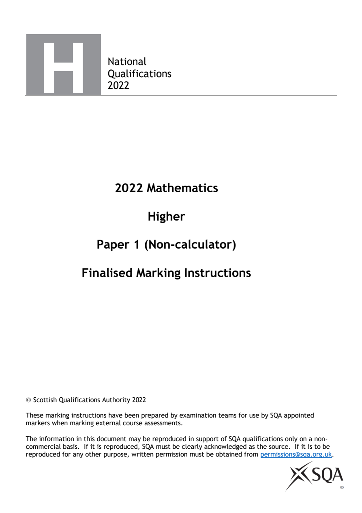
Selectable page text
National
Qualifications
2022
2022 Mathematics
Higher
Paper 1 (Non-calculator)
Finalised Marking Instructions
© Scottish Qualifications Authority 2022
These marking instructions have been prepared by examination teams for use by SQA appointed
markers when marking external course assessments.
The information in this document may be reproduced in support of SQA qualifications only on a non-
commercial basis. If it is reproduced, SQA must be clearly acknowledged as the source. If it is to be
reproduced for any other purpose, written permission must be obtained from permissions@sqa.org.uk.PDF page 2
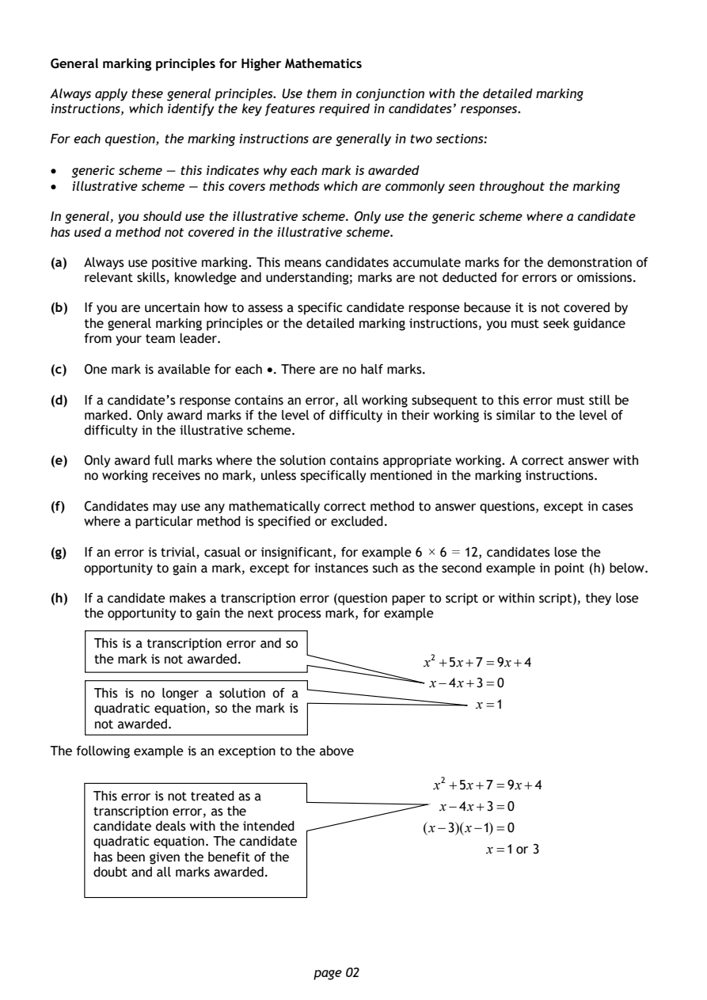
Selectable page text
General marking principles for Higher Mathematics
Always apply these general principles. Use them in conjunction with the detailed marking
instructions, which identify the key features required in candidates’ responses.
For each question, the marking instructions are generally in two sections:
• generic scheme — this indicates why each mark is awarded
• illustrative scheme — this covers methods which are commonly seen throughout the marking
In general, you should use the illustrative scheme. Only use the generic scheme where a candidate
has used a method not covered in the illustrative scheme.
(a) Always use positive marking. This means candidates accumulate marks for the demonstration of
relevant skills, knowledge and understanding; marks are not deducted for errors or omissions.
(b) If you are uncertain how to assess a specific candidate response because it is not covered by
the general marking principles or the detailed marking instructions, you must seek guidance
from your team leader.
(c) One mark is available for each •. There are no half marks.
(d) If a candidate’s response contains an error, all working subsequent to this error must still be
marked. Only award marks if the level of difficulty in their working is similar to the level of
difficulty in the illustrative scheme.
(e) Only award full marks where the solution contains appropriate working. A correct answer with
no working receives no mark, unless specifically mentioned in the marking instructions.
(f) Candidates may use any mathematically correct method to answer questions, except in cases
where a particular method is specified or excluded.
(g) If an error is trivial, casual or insignificant, for example 6 × 6 = 12, candidates lose the
opportunity to gain a mark, except for instances such as the second example in point (h) below.
(h) If a candidate makes a transcription error (question paper to script or within script), they lose
the opportunity to gain the next process mark, for example
This is a transcription error and so
the mark is not awarded. x² +5x+7 =9x+4
x−4x+3=0
This is no longer a solution of a
x=1
quadratic equation, so the mark is
not awarded.
The following example is an exception to the above
x² +5x+7 =9x+4
This error is not treated as a
x−4x+3=0
transcript ion err or, as the
candidate deals with the intended (x−3)(x−1)=0
quadratic equation. The candidate
x=1 or 3
has been given the benefit of the
doubt and all marks awarded.
page 02PDF page 3
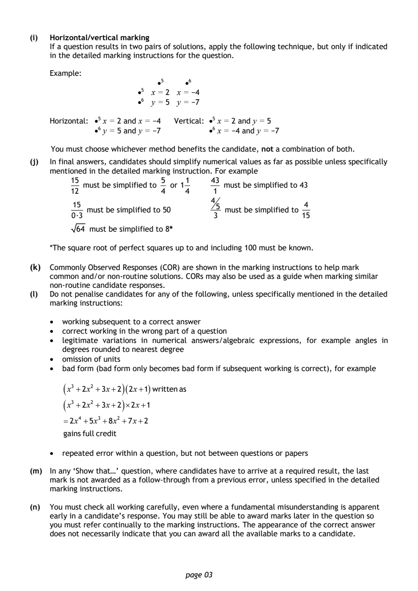
Selectable page text
(i) Horizontal/vertical marking
If a question results in two pairs of solutions, apply the following technique, but only if indicated
in the detailed marking instructions for the question.
Example:
•5 •6
•5 x = 2 x = −4
•6 y = 5 y = −7
Horizontal: •5 x = 2 and x = −4 Vertical: •⁵ x = 2 and y = 5
•6 y = 5 and y = −7 •6 x = −4 and y = −7
You must choose whichever method benefits the candidate, not a combination of both.
(j) In final answers, candidates should simplify numerical values as far as possible unless specifically
mentioned in the detailed marking instruction. For example
15 5 1 43
must be simplified to or 1 must be simplified to 43
12 4 4 1
4
15 5 4
must be simplified to 50 must be simplified to
0·3 3 15
64 must be simplified to 8*
*The square root of perfect squares up to and including 100 must be known.
(k) Commonly Observed Responses (COR) are shown in the marking instructions to help mark
common and/or non-routine solutions. CORs may also be used as a guide when marking similar
non-routine candidate responses.
(l) Do not penalise candidates for any of the following, unless specifically mentioned in the detailed
marking instructions:
• working subsequent to a correct answer
• correct working in the wrong part of a question
• legitimate variations in numerical answers/algebraic expressions, for example angles in
degrees rounded to nearest degree
• omission of units
• bad form (bad form only becomes bad form if subsequent working is correct), for example
(
x³ +2x² +3x+2
)(2x+1)
written as
( )
x³ +2x² +3x+2 ×2x+1
=2x⁴ +5x³ +8x² +7x+2
gains full credit
• repeated error within a question, but not between questions or papers
(m) In any ‘Show that…’ question, where candidates have to arrive at a required result, the last
mark is not awarded as a follow-through from a previous error, unless specified in the detailed
marking instructions.
(n) You must check all working carefully, even where a fundamental misunderstanding is apparent
early in a candidate’s response. You may still be able to award marks later in the question so
you must refer continually to the marking instructions. The appearance of the correct answer
does not necessarily indicate that you can award all the available marks to a candidate.
page 03PDF page 4
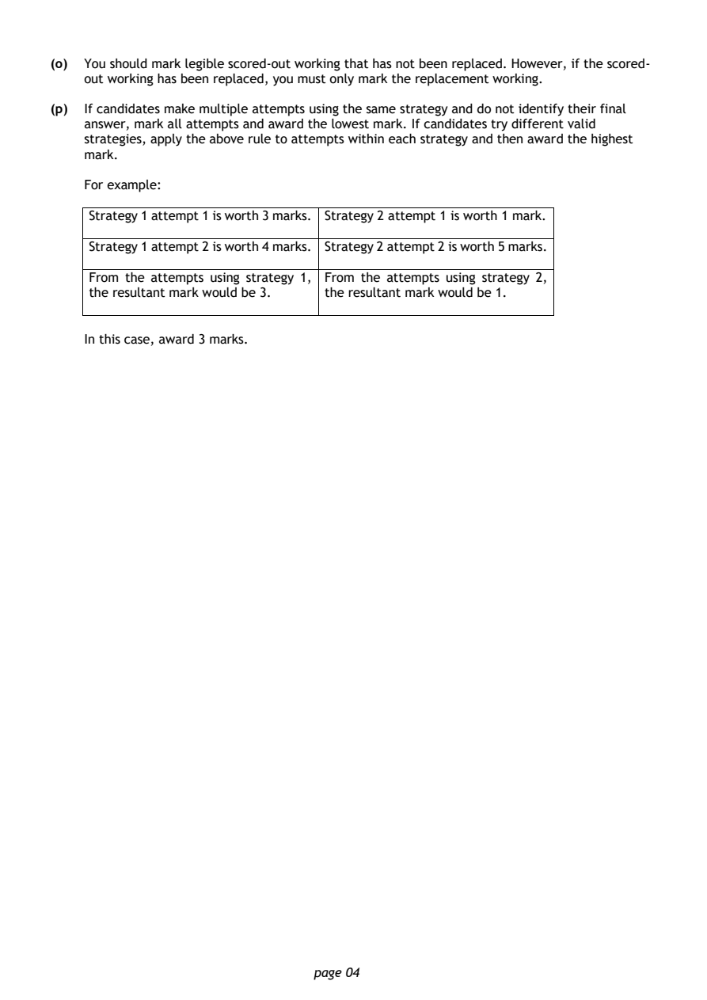
Selectable page text
(o) You should mark legible scored-out working that has not been replaced. However, if the scored-
out working has been replaced, you must only mark the replacement working.
(p) If candidates make multiple attempts using the same strategy and do not identify their final
answer, mark all attempts and award the lowest mark. If candidates try different valid
strategies, apply the above rule to attempts within each strategy and then award the highest
mark.
For example:
Strategy 1 attempt 1 is worth 3 marks. Strategy 2 attempt 1 is worth 1 mark.
Strategy 1 attempt 2 is worth 4 marks. Strategy 2 attempt 2 is worth 5 marks.
From the attempts using strategy 1, From the attempts using strategy 2,
the resultant mark would be 3. the resultant mark would be 1.
In this case, award 3 marks.
page 04PDF page 5
Paper 1, Question 1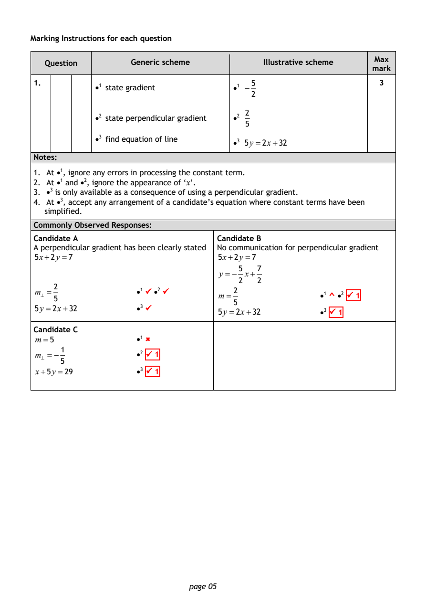
Selectable page text
Marking Instructions for each question
Max
Question Generic scheme Illustrative scheme
mark
1.
•1 state gradient •1 −
5 3
2
2
•2 state perpendicular gradient •2
5
•3 find equation of line
•3 5y =2x+32
Notes:
1. At •¹, ignore any errors in processing the constant term.
2. At •¹ and •², ignore the appearance of ‘x’.
3. •³ is only available as a consequence of using a perpendicular gradient.
4. At •³, accept any arrangement of a candidate’s equation where constant terms have been
simplified.
Commonly Observed Responses:
Candidate A Candidate B
A perpendicular gradient has been clearly stated No communication for perpendicular gradient
5x+2y =7 5x+2y =7
5 7
y =− x+
2 2
2
m_{⊥} = •1 ✓ •2 ✓ 2
m= •1 ^ •2 ✓ 1
5
5
5y =2x+32 •3 ✓
5y =2x+32 •3 ✓ 1
Candidate C
m=5 •1
1
m_{⊥} =− •2 ✓ 1
5
x+5y =29 •3 ✓ 1
page 05PDF page 6
Paper 1, Question 2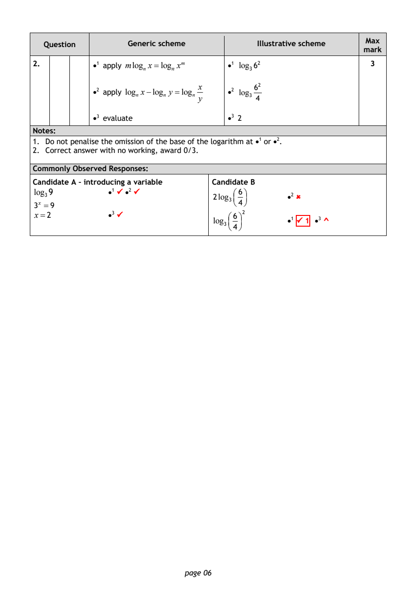
Selectable page text
Max
Question Generic scheme Illustrative scheme
mark
2. •1 apply mlogₙ x =logₙ x^{m} •1 log₃6² 3
x 6²
•2 apply logₙ x−logₙ y =logₙ •2 log₃
y 4
•3 evaluate •3 2
Notes:
1. Do not penalise the omission of the base of the logarithm at •¹ or •².
2. Correct answer with no working, award 0/3.
Commonly Observed Responses:
Candidate A – introducing a variable Candidate B
log₃9 •1 ✓ •2 ✓ 6
2log₃ •2
3^{x} =9
4
x=2 •3 ✓ 6²
log₃ •1 ✓ 1 •³ ^
4
page 06PDF page 7
Paper 1, Question 3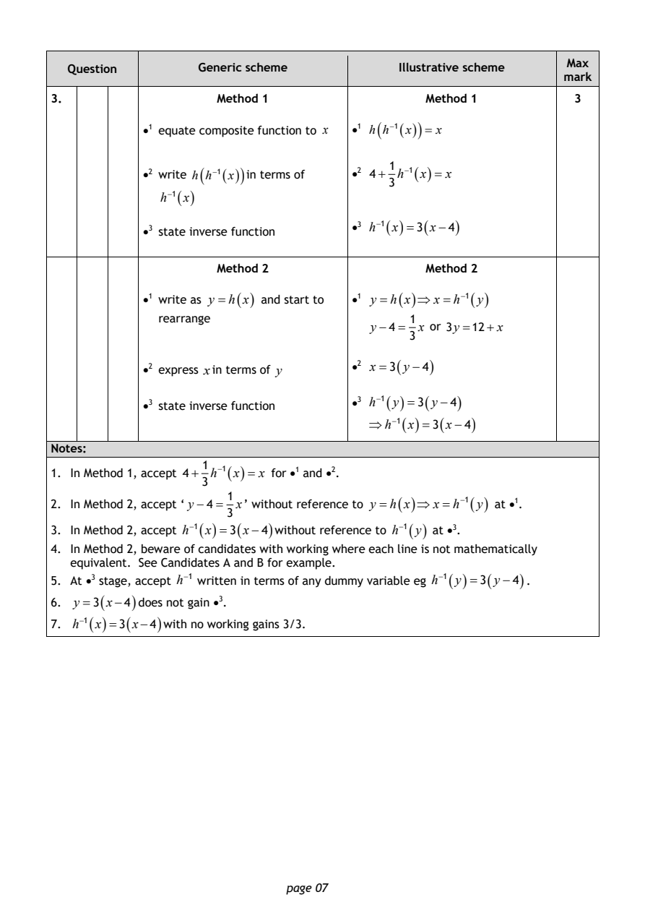
Selectable page text
Max
Question Generic scheme Illustrative scheme
mark
3. Method 1 Method 1 3
•1 equate composite function to x •1 h ( h⁻¹(x)) = x
1
•2 write h ( h⁻¹(x)) in terms of •2 4+ h⁻¹(x)= x
3
h⁻¹(x)
•3 state inverse function
•3 h⁻¹(x)=3(x−4)
Method 2 Method 2
•1 write as y =h(x) and start to •1 y =h(x)⇒ x =h⁻¹(y)
rearrange 1
y−4= x or 3y =12+x
3
•2 express xin terms of y •2 x =3(y−4)
•3 state inverse function •3 h⁻¹(y)=3(y−4)
⇒h⁻¹(x)=3(x−4)
Notes:
1
1. In Method 1, accept 4+ h⁻¹(x)= x for •¹ and •².
3
1
2. In Method 2, accept ‘ y−4= x’ without reference to y =h(x)⇒ x =h⁻¹(y) at •¹.
3
3. In Method 2, accept h⁻¹(x)=3(x−4)without reference to h⁻¹(y) at •³.
4. In Method 2, beware of candidates with working where each line is not mathematically
equivalent. See Candidates A and B for example.
5. At •³ stage, accept h⁻¹ written in terms of any dummy variable eg h⁻¹(y)=3(y−4).
6. y =3(x−4) does not gain •³.
7.
h⁻¹(x)=3(x−4)
with no working gains 3/3.
page 07PDF page 8
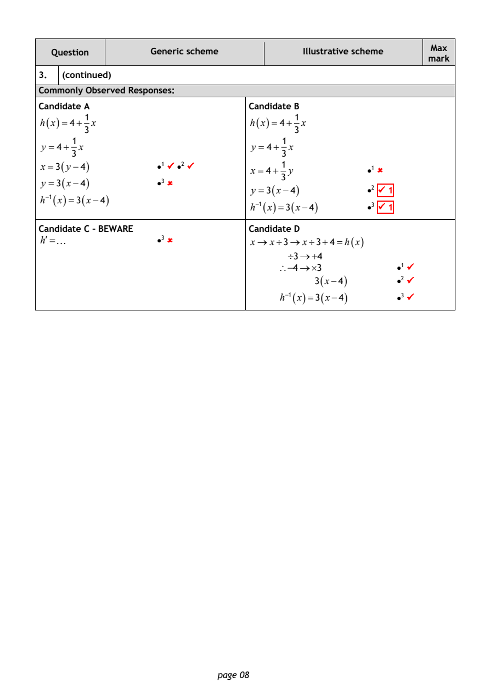
Selectable page text
Max
Question Generic scheme Illustrative scheme
mark
3. (continued)
Commonly Observed Responses:
Candidate A Candidate B
1 1
h(x)=4+ x h(x)=4+ x
3 3
1 1
y =4+ x y =4+ x
3 3
x =3(y−4) •1 ✓ •2 ✓ 1
x =4+ y •1
3
y =3(x−4) •3
y =3(x−4) •2 ✓ 1
h⁻¹(x)=3(x−4)
h⁻¹(x)=3(x−4) •3 ✓ 1
Candidate C – BEWARE Candidate D
h′= •3 x→ x÷3→ x÷3+4=h(x)
÷3→+4
∴−4→×3 •1 ✓
3(x−4) •2 ✓
h⁻¹(x)=3(x−4) •3 ✓
page 08PDF page 9
Paper 1, Question 4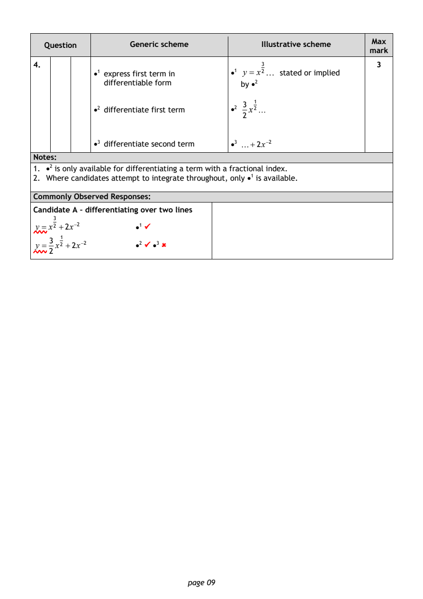
Selectable page text
Max
Question Generic scheme Illustrative scheme
mark
4. 3
•1 express first term in •1 y = x³² stated or implied
differentiable form by •²
3
•2 differentiate first term •2 x²¹
2
•3 differentiate second term •3 +2x⁻²
Notes:
1. •² is only available for differentiating a term with a fractional index.
2. Where candidates attempt to integrate throughout, only •¹ is available.
Commonly Observed Responses:
Candidate A – differentiating over two lines
y = x³² +2x⁻² •1 ✓
3
y = x²¹ +2x⁻² •2 ✓ •3
2
page 09PDF page 10
Paper 1, Question 5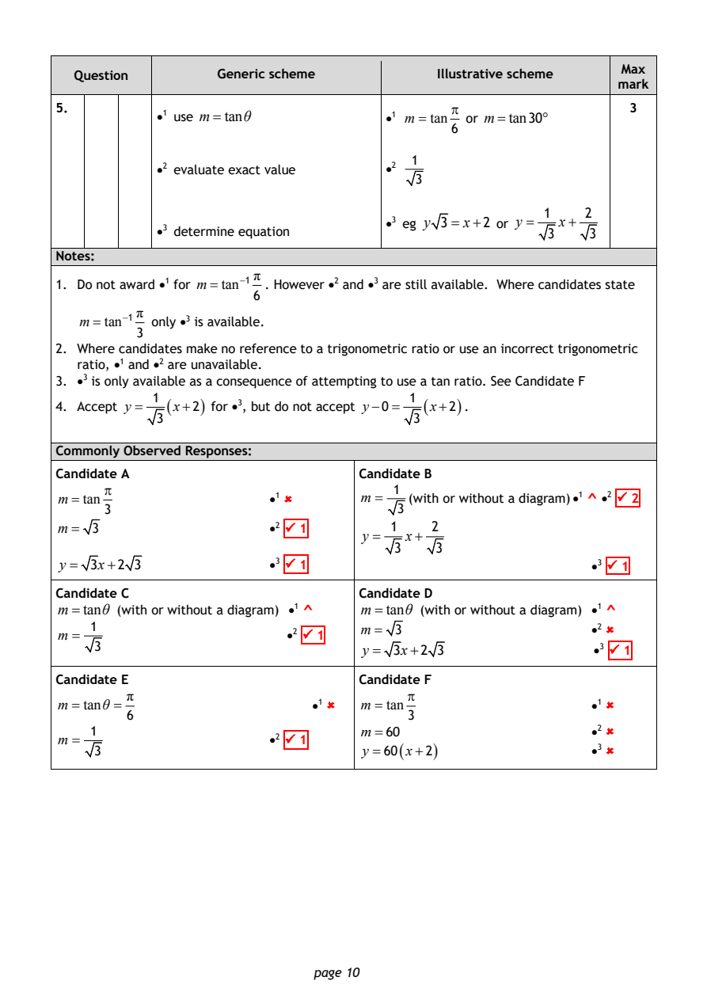
Selectable page text
Max
Question Generic scheme Illustrative scheme
mark
5. π 3
•1 use m=tanθ •1 m = tan or m=tan30°
6
1
•2 evaluate exact value •2
3
1 2
•3 eg y 3 = x+2 or y = x+
•3 determine equation 3 3
Notes:
π
1. Do not award •¹ for m=tan⁻¹ . However •² and •³ are still available. Where candidates state
6
π
m=tan⁻¹ only •³ is available.
3
2. Where candidates make no reference to a trigonometric ratio or use an incorrect trigonometric
ratio, •¹ and •² are unavailable.
3. •³ is only available as a consequence of attempting to use a tan ratio. See Candidate F
1 1
4. Accept y = (x+2) for •³, but do not accept y−0= (x+2).
3 3
Commonly Observed Responses:
Candidate A Candidate B
π 1
m=tan •1 m = (with or without a diagram) •¹ ^ •2 ✓ 2
3 3
m= 3 •2 ✓ 1 1 2
y = x+
3 3
y = 3x+2 3 •3 ✓ 1 •3 ✓ 1
Candidate C Candidate D
m=tanθ (with or without a diagram) •¹ ^ m=tanθ (with or without a diagram) •¹ ^
1 m= 3 •2
m = •2 ✓ 1
3 y = 3x+2 3 •3 ✓ 1
Candidate E Candidate F
π π
m= tanθ = •1 m = tan •1
6 3
1 m=60 •2
m = •2 ✓ 1
3 y =60(x+2) •3
page 10PDF page 11
Paper 1, Question 6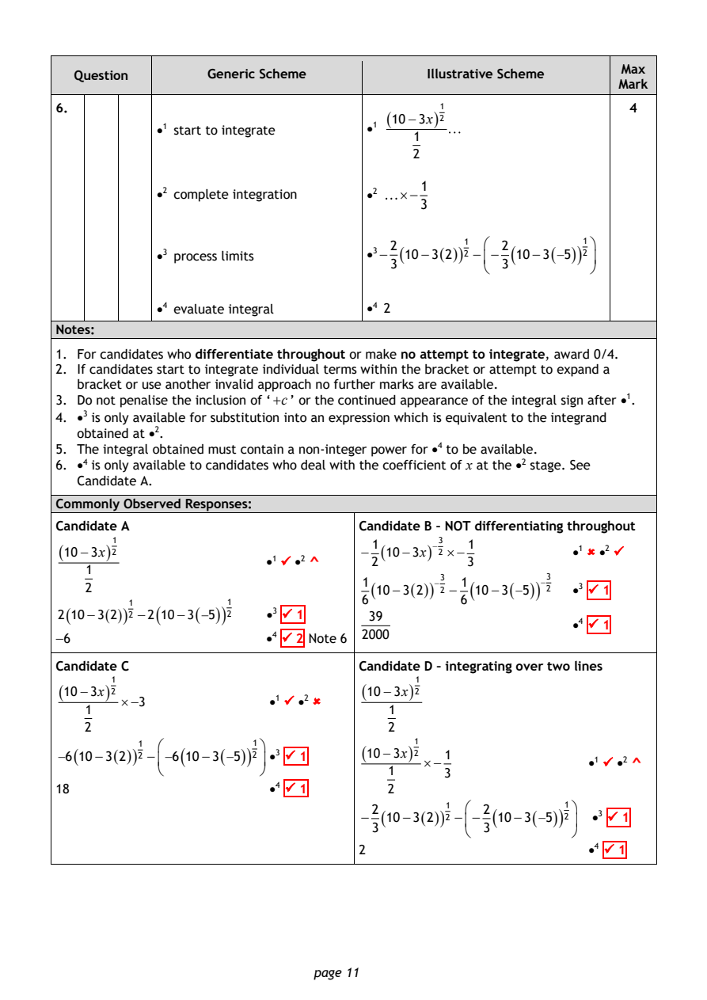
Selectable page text
Max
Question Generic Scheme Illustrative Scheme
Mark
6. 4
(10−3x)²¹
•1 start to integrate •1
1
2
1
•2 complete integration •2 ×−
3
2 2
•3 process limits •3− (10−3(2))²¹ − − ( 10−3(−5)) ²¹
3 3
•4 evaluate integral •4 2
Notes:
1. For candidates who differentiate throughout or make no attempt to integrate, award 0/4.
2. If candidates start to integrate individual terms within the bracket or attempt to expand a
bracket or use another invalid approach no further marks are available.
3. Do not penalise the inclusion of ‘+c’ or the continued appearance of the integral sign after •¹.
4. •³ is only available for substitution into an expression which is equivalent to the integrand
obtained at •².
5. The integral obtained must contain a non-integer power for •⁴ to be available.
6. •⁴ is only available to candidates who deal with the coefficient of x at the •² stage. See
Candidate A.
Commonly Observed Responses:
Candidate A Candidate B – NOT differentiating throughout
1 1
(10−3x)²¹ − (10−3x)⁻³² ×− •1 •2 ✓
•1 ✓ •2 ^ 2 3
1
1 1
2 (10−3(2))⁻³² − ( 10−3(−5)) ⁻³² •3 ✓ 1
6 6
2(10−3(2))²¹ −2 ( 10−3(−5)) ²¹ •3 ✓ 1 39
•4 ✓ 1
−6 •4 ✓ 2 Note 6 2000
Candidate C Candidate D – integrating over two lines
(10−3x)²¹ (10−3x)²¹
×−3 •1 ✓ •2
1 1
2 2
−6(10−3(2))²¹ − −6 ( 10−3(−5)) ²¹ •3 ✓ 1 (10−3x)²¹
×−
1
•1 ✓ •2 ^
1 3
18 •4 ✓ 1 2
2 2
− (10−3(2))²¹ − − ( 10−3(−5)) ²¹ •3 ✓ 1
3 3
2 •4 ✓ 1
page 11PDF page 12
Paper 1, Question 7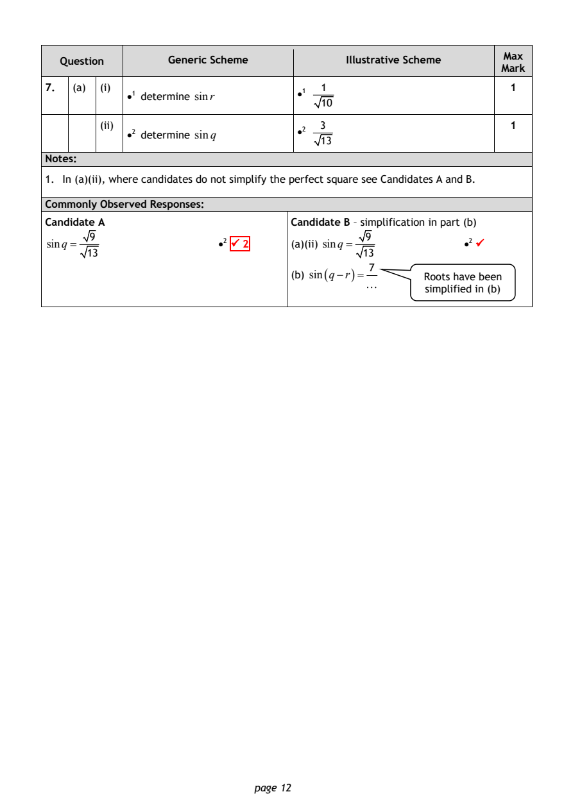
Selectable page text
Max
Question Generic Scheme Illustrative Scheme
Mark
7. (a) (i) 1 1
•1 determine sinr •1
10
(ii) 3 1
•2 determine sinq •2
13
Notes:
1. In (a)(ii), where candidates do not simplify the perfect square see Candidates A and B.
Commonly Observed Responses:
Candidate A Candidate B – simplification in part (b)
9 9
sinq= •2 ✓ 2 (a)(ii) sinq= •2 ✓
13 13
7
(b)
sin(q−r)=
Roots have been
simplified in (b)
page 12PDF page 13
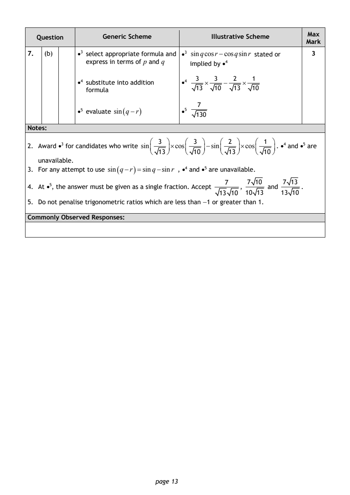
Selectable page text
Max
Question Generic Scheme Illustrative Scheme
Mark
7. (b) •3 select appropriate formula and •³ sinqcosr−cosqsinr stated or 3
express in terms of p and q implied by •⁴
3 3 2 1
•4 substitute into addition •4 × − ×
13 10 13 10
formula
7
•5 evaluate sin(q−r) •5
130
Notes:
3 3 2 1
2. Award •³ for candidates who write sin ×cos −sin ×cos . •4 and •⁵ are
13 10 13 10
unavailable.
3. For any attempt to use sin(q−r)=sinq−sinr , •⁴ and •⁵ are unavailable.
7 7 10 7 13
4. At •⁵, the answer must be given as a single fraction. Accept , and .
13 10 10 13 13 10
5. Do not penalise trigonometric ratios which are less than −1 or greater than 1.
Commonly Observed Responses:
page 13PDF page 14
Paper 1, Question 8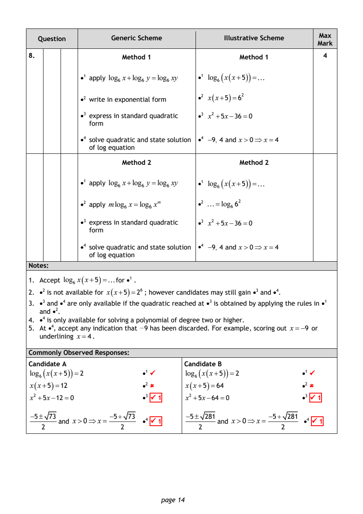
Selectable page text
Max
Question Generic Scheme Illustrative Scheme
Mark
8. Method 1 Method 1 4
•1 apply log₆ x+log₆ y=log₆ xy •1 log₆ ( x(x+5)) =
•2 write in exponential form
•2 x(x+5)=6²
•3 express in standard quadratic •3 x² +5x−36=0
form
•4 solve quadratic and state solution •⁴ −9, 4 and x>0⇒ x=4
of log equation
Method 2 Method 2
•1 apply log₆ x+log₆ y=log₆ xy •1 log₆ ( x(x+5)) =
•2 apply mlog₆ x=log₆ x^{m} •2 =log₆6²
•3 express in standard quadratic •3 x² +5x−36=0
form
•4 solve quadratic and state solution •⁴ −9, 4 and x>0⇒ x=4
of log equation
Notes:
1. Accept log₆ x(x+5)= for •¹ .
2. •² is not available for
x(x+5)=2⁶;
however candidates may still gain •³ and •⁴.
3. •³ and •⁴ are only available if the quadratic reached at •³ is obtained by applying the rules in •¹
and •².
4. •⁴ is only available for solving a polynomial of degree two or higher.
5. At •⁴, accept any indication that −9 has been discarded. For example, scoring out x=−9 or
underlining x=4.
Commonly Observed Responses:
Candidate A Candidate B
log₆ ( x(x+5)) =2 •1 ✓ log₆ ( x(x+5)) =2 •1 ✓
x(x+5)=12 •2 x(x+5)=64 •2
x² +5x−12=0 •3 ✓ 1 x² +5x−64=0 •3 ✓ 1
−5± 73 −5+ 73 ₄ −5± 281 −5+ 281 ₄
and x>0⇒x= • ✓ 1 and x>0⇒x= • ✓ 1
2 2 2 2
page 14PDF page 15
Paper 1, Question 9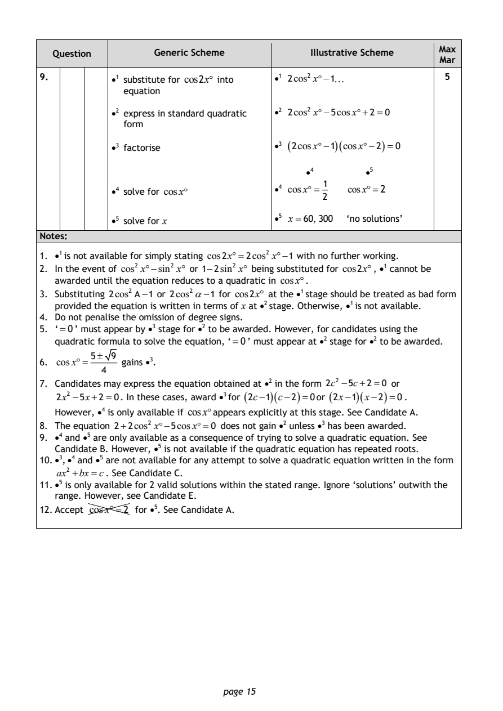
Selectable page text
Max
Question Generic Scheme Illustrative Scheme
Mar
k
9. •1 substitute for cos2x° into •1 2cos² x°−1 5
equation
•2 express in standard quadratic •2 2cos² x°−5cosx°+2=0
form
•3 factorise •3 (2cosx°−1)(cosx°−2)=0
•4 •5
1
•4 solve for cosx° •4 cosx°= cosx°=2
2
•5 solve for x •5 x =60, 300 ‘no solutions’
Notes:
1. •¹ is not available for simply stating cos2x°=2cos² x°−1 with no further working.
2. In the event of cos² x°−sin² x° or 1−2sin² x° being substituted for cos2x°, •¹ cannot be
awarded until the equation reduces to a quadratic in cosx°.
3. Substituting 2cos² A−1 or 2cos²α−1 for cos2x° at the •¹ stage should be treated as bad form
provided the equation is written in terms of x at •²stage. Otherwise, •¹is not available.
4. Do not penalise the omission of degree signs.
5. ‘=0’ must appear by •³ stage for •² to be awarded. However, for candidates using the
quadratic formula to solve the equation, ‘=0’ must appear at •² stage for •² to be awarded.
5± 9
6. cosx°= gains •³.
4
7. Candidates may express the equation obtained at •² in the form 2c² −5c+2=0 or
2x² −5x+2=0. In these cases, award •³ for (2c−1)(c−2)=0or (2x−1)(x−2)=0.
However, •⁴ is only available if cosx°appears explicitly at this stage. See Candidate A.
8. The equation 2+2cos² x°−5cosx°=0 does not gain •² unless •³ has been awarded.
9. •⁴ and •⁵ are only available as a consequence of trying to solve a quadratic equation. See
Candidate B. However, •⁵ is not available if the quadratic equation has repeated roots.
10. •³, •4 and •⁵ are not available for any attempt to solve a quadratic equation written in the form
ax² +bx=c. See Candidate C.
11. •⁵ is only available for 2 valid solutions within the stated range. Ignore ‘solutions’ outwith the
range. However, see Candidate E.
12. Accept cosx°=2 for •⁵. See Candidate A.
page 15PDF page 16
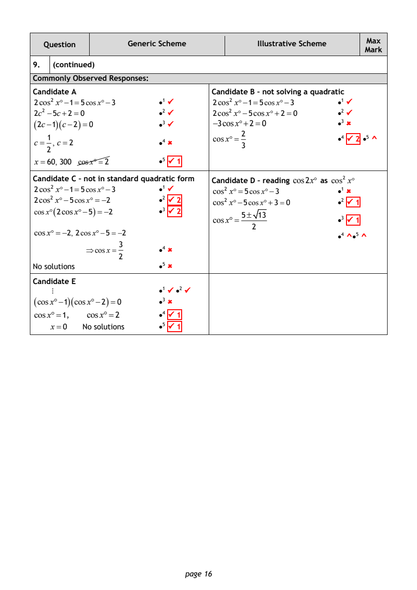
Selectable page text
Max
Question Generic Scheme Illustrative Scheme
Mark
9. (continued)
Commonly Observed Responses:
Candidate A Candidate B – not solving a quadratic
2cos² x°−1=5cosx°−3 •1 ✓ 2cos² x°−1=5cosx°−3 •1 ✓
2c² −5c+2=0 •2 ✓ 2cos² x°−5cosx°+2=0 •2 ✓
(2c−1)(c−2)=0 •3 ✓ −3cosx°+2=0 •3
2
1 cosx°= •4 ✓ 2 •⁵ ^
c= , c=2 •4
3
2
x =60, 300 cosx°=2 •5 ✓ 1
Candidate C – not in standard quadratic form Candidate D – reading cos2x° as cos² x°
2cos² x°−1=5cosx°−3 •1 ✓ cos² x°=5cosx°−3 •1
2cos² x°−5cosx°=−2 •2 ✓ 2 cos² x°−5cosx°+3=0 •2 ✓ 1
cosx°(2cosx°−5)=−2 •3 ✓ 2
5± 13
cosx°= •3 ✓ 1
2
cosx°=−2, 2cosx°−5=−2
•4 ^•5 ^
3
⇒cosx= •4
2
No solutions •5
Candidate E
⋮ •1 ✓ •2 ✓
(cosx°−1)(cosx°−2)=0 •3
cosx°=1, cosx°=2 •4 ✓ 1
x=0 No solutions •5 ✓ 1
page 16PDF page 17
Paper 1, Question 10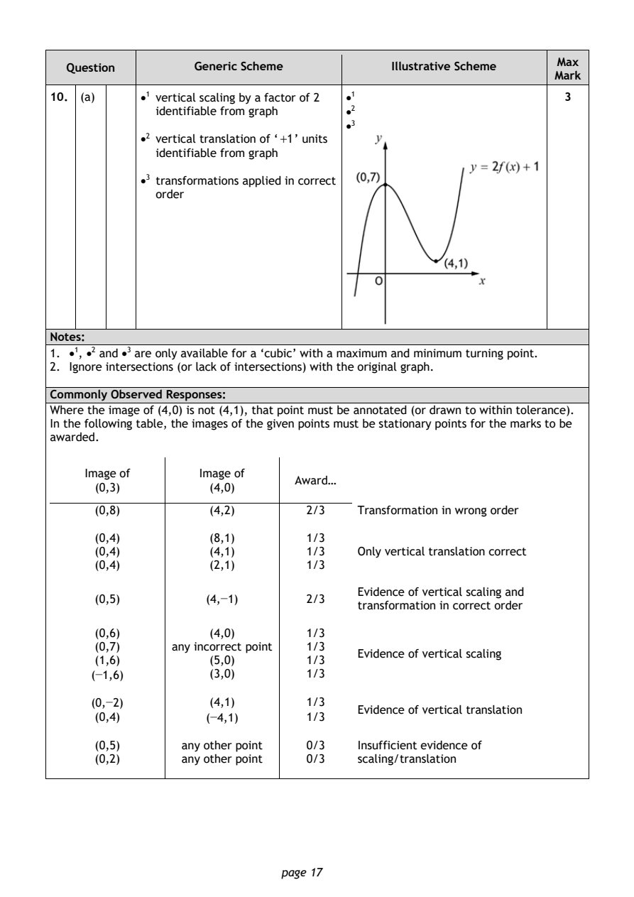
Selectable page text
Max
Question Generic Scheme Illustrative Scheme
Mark
10. (a) •1 vertical scaling by a factor of 2 •1 3
identifiable from graph •2
•3
•2 vertical translation of ‘+1’ units
identifiable from graph
•3 transformations applied in correct
order
Notes:
1. •¹, •2 and •³ are only available for a ‘cubic’ with a maximum and minimum turning point.
2. Ignore intersections (or lack of intersections) with the original graph.
Commonly Observed Responses:
Where the image of (4,0) is not (4,1), that point must be annotated (or drawn to within tolerance).
In the following table, the images of the given points must be stationary points for the marks to be
awarded.
Image of Image of
Award…
(0,3) (4,0)
(0,8) (4,2) 2/3 Transformation in wrong order
(0,4) (8,1) 1/3
(0,4) (4,1) 1/3 Only vertical translation correct
(0,4) (2,1) 1/3
Evidence of vertical scaling and
(0,5) (4,−1) 2/3
transformation in correct order
(0,6) (4,0) 1/3
(0,7) any incorrect point 1/3
Evidence of vertical scaling
(1,6) (5,0) 1/3
(−1,6) (3,0) 1/3
(0,−2) (4,1) 1/3
Evidence of vertical translation
(0,4) (−4,1) 1/3
(0,5) any other point 0/3 Insufficient evidence of
(0,2) any other point 0/3 scaling/translation
page 17PDF page 18
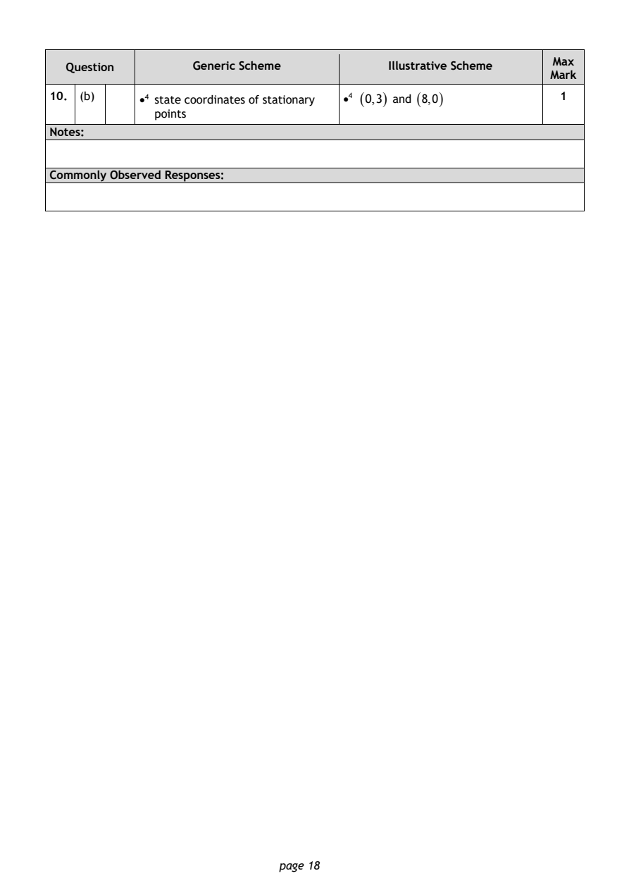
Selectable page text
Max
Question Generic Scheme Illustrative Scheme
Mark
10. (b) •4 state coordinates of stationary •4 (0,3) and (8,0) 1
points
Notes:
Commonly Observed Responses:
page 18PDF page 19
Paper 1, Question 11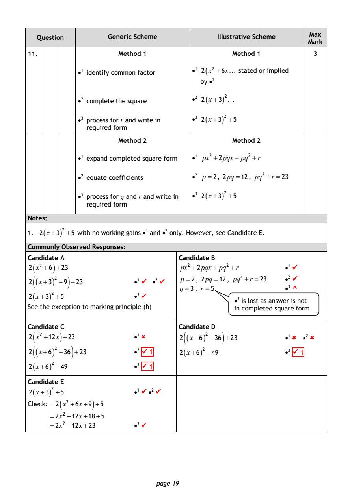
Selectable page text
Max
Question Generic Scheme Illustrative Scheme
Mark
11. Method 1 Method 1 3
•1 identify common factor •1 2 ( x² +6x… stated or implied
by •²
•2 complete the square
•2 2(x+3)²
•3 process for r and write in •3 2(x+3)² +5
required form
Method 2 Method 2
•1 expand completed square form •1 px² +2pqx+ pq² +r
•2 equate coefficients •2 p =2, 2pq=12, pq² +r =23
•3 process for q and r and write in •3 2(x+3)² +5
required form
Notes:
1. 2(x+3)² +5 with no working gains •¹ and •² only. However, see Candidate E.
Commonly Observed Responses:
Candidate A Candidate B
2 ( x² +6 ) +23 px² +2pqx+ pq² +r •1 ✓
2 ( (x+3)² −9 ) +23 •1 ✓ •2 ✓ p =2, 2pq=12, pq² +r =23 •2 ✓
q=3, r =5 •3 ^
2(x+3)² +5 •3 ✓
•3 is lost as answer is not
See the exception to marking principle (h) in completed square form
Candidate C Candidate D
( ) ( )
2 x² +12x +23 •1 2 (x+6)² −36 +23 •1 •2
( )
2 (x+6)² −36 +23 •2 ✓ 1 2(x+6)² −49 •3 ✓ 1
2(x+6)² −49 •3 ✓ 1
Candidate E
2(x+3)² +5 •1 ✓ •2 ✓
( )
Check: =2 x² +6x+9 +5
=2x² +12x+18+5
=2x² +12x+23 •3 ✓
page 19PDF page 20
Paper 1, Question 12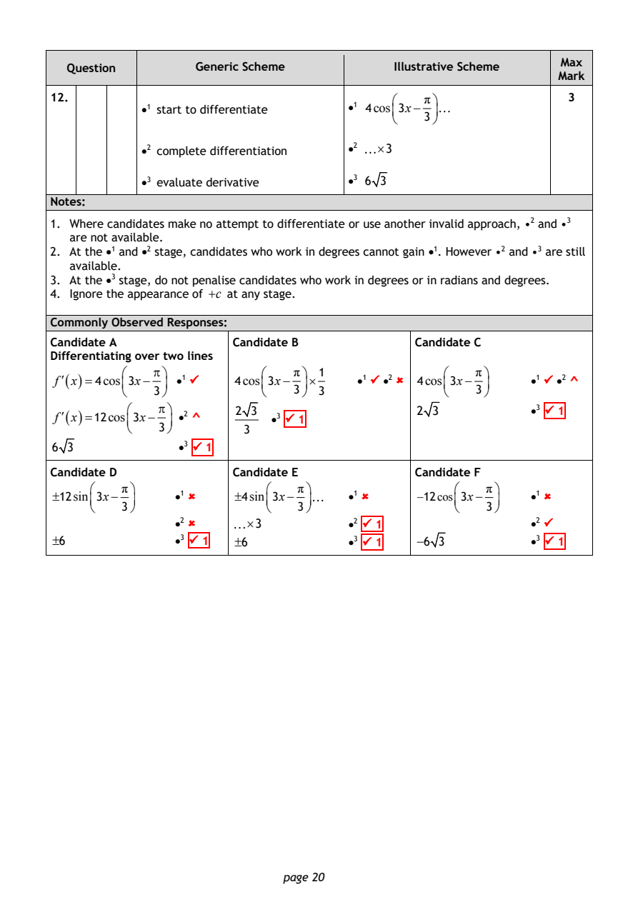
Selectable page text
Max
Question Generic Scheme Illustrative Scheme
Mark
12. π 3
•1 start to differentiate •1 4cos 3x−
3
•2 complete differentiation •2 ×3
•3 evaluate derivative •3 6 3
Notes:
1. Where candidates make no attempt to differentiate or use another invalid approach, •² and •³
are not available.
2. At the •¹ and •² stage, candidates who work in degrees cannot gain •¹. However •² and •³ are still
available.
3. At the •³ stage, do not penalise candidates who work in degrees or in radians and degrees.
4. Ignore the appearance of +c at any stage.
Commonly Observed Responses:
Candidate A Candidate B Candidate C
Differentiating over two lines
π π 1 π
f′(x)=4cos 3x− •1 ✓ 4cos 3x− × •1 ✓ •2 4cos 3x− •1 ✓ •2 ^
3 3 3 3
f′(x)=12cos 3x− π • ₂ ^ 2 3 •3 ✓ 1 2 3 •3 ✓ 1
3 3
6 3 •3 ✓ 1
Candidate D Candidate E Candidate F
π π π
±12sin 3x− •1 ±4sin 3x− •1 −12cos3x− •1
3 3 3
•2 ×3 •2 ✓ 1 •2 ✓
±6 •3 ✓ 1 ±6 •3 ✓ 1 −6 3 •3 ✓ 1
page 20PDF page 21
Paper 1, Question 13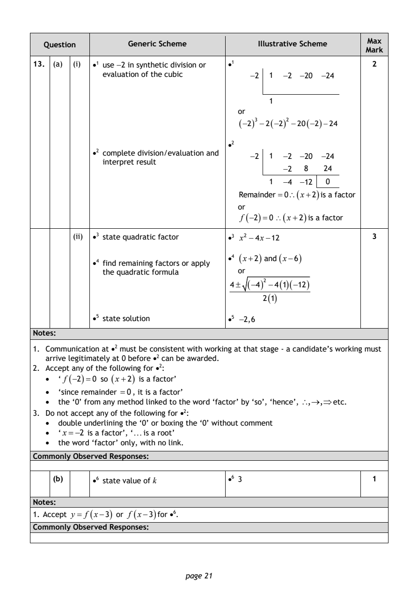
Selectable page text
Max
Question Generic Scheme Illustrative Scheme
Mark
13. (a) (i) •1 use −2 in synthetic division or •1 2
evaluation of the cubic −2 1 −2 −20 −24
1
or
(−2)³ −2(−2)² −20(−2)−24
•2
•2 complete division/evaluation and
−2 1 −2 −20 −24
interpret result
−2 8 24
1 −4 −12 0
Remainder =0∴(x+2)is a factor
or
f (−2)=0∴ (x+2)is a factor
(ii) •3 state quadratic factor •3 x² −4x−12 3
•4 (x+2) and (x−6)
•4 find remaining factors or apply
the quadratic formula or
4± (−4)² −4(1)(−12)
2(1)
•5 state solution •5 −2,6
Notes:
1. Communication at •² must be consistent with working at that stage - a candidate’s working must
arrive legitimately at 0 before •² can be awarded.
2. Accept any of the following for •²:
• ‘ f (−2)=0 so (x+2) is a factor’
• ‘since remainder =0, it is a factor’
• the ‘0’ from any method linked to the word ‘factor’ by ‘so’, ‘hence’, ∴,→,⇒etc.
3. Do not accept any of the following for •²:
• double underlining the ‘0’ or boxing the ‘0’ without comment
• ‘x=−2 is a factor’, ‘ is a root’
• the word ‘factor’ only, with no link.
Commonly Observed Responses:
(b) •6 state value of k •6 3 1
Notes:
1. Accept y= f (x−3) or f (x−3) for •⁶.
Commonly Observed Responses:
page 21PDF page 22
Paper 1, Question 14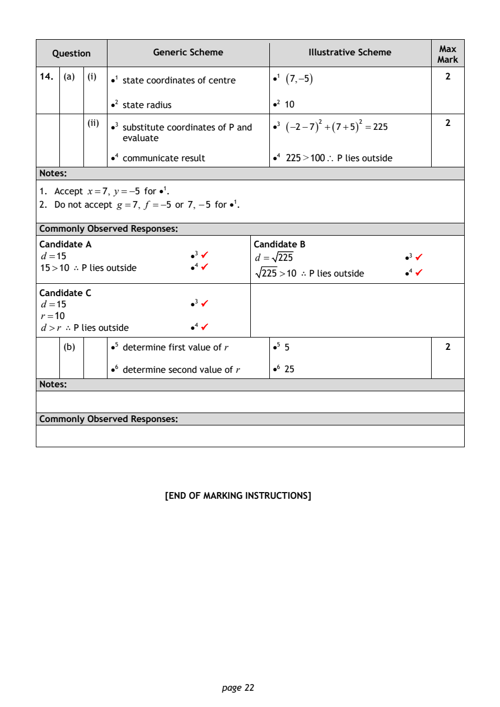
Selectable page text
Max
Question Generic Scheme Illustrative Scheme
Mark
14. (a) (i) •1 state coordinates of centre •1 (7,−5) 2
•2 state radius •2 10
(ii) •3 substitute coordinates of P and •3 (−2−7)² +(7+5)² =225 2
evaluate
•4 communicate result •4 225>100∴ P lies outside
Notes:
1. Accept x=7, y =−5 for •¹.
2. Do not accept g =7, f =−5 or 7, −5 for •¹.
Commonly Observed Responses:
Candidate A Candidate B
d =15 •3 ✓ d = 225 •3 ✓
15>10 ∴ P lies outside •4 ✓
225 >10 ∴ P lies outside •4 ✓
Candidate C
d =15 •3 ✓
r =10
d >r ∴ P lies outside •4 ✓
(b) •5 determine first value of r •5 5 2
•6 determine second value of r •6 25
Notes:
Commonly Observed Responses:
[END OF MARKING INSTRUCTIONS]
page 22